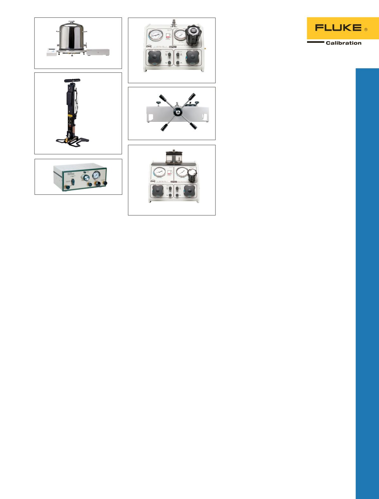

E-DWT-H
4322
3130
2700G
Druckkalibratoren
Automatisierter
Druckkalibrator 4322
•
Robuste, leichte und kompakte
Komponenten zum Einsatz im
Labor oder vor Ort
•
Genaue automatisierte
Druckregelung von Vakuum bis
70 MPa (10.000 psi) Überdruck
•
Im gesamten Druckbereich
Genauigkeit von 0,1 % des
Messwerts oder 25 Pa (0,004 psi,
0,1 in H
2
O), je nach-dem,
welcher Wert größer ist
•
Integrierte Druck-/
Unterdruckgenerierung von
3,5 kPa (0,5 psi) absolut bis
2 MPa (300 psi)
Portabler Druckkalibrator
3130
Das Gerät bietet alle erforderlichen
Funktionen zum Geben, Regeln
und Messen von Druck sowie
zum Ablesen des vom Prüfling
angezeigten Druckwerts.
•
Messen und Geben von Druck,
von Vakuum bis 2 MPa
(300 psi, 20 bar)
•
Mit der integrierten Pumpe kann
Vakuum bis -80 kPa (-12 psi,
-0,8 bar) oder Druck bis 2 MPa
(300 psi, 20 bar) erzeugt werden
•
Versorgungsdruckanschluss zur
Verwendung externer Gasquellen
bis 2 MPa (300 psi, 20 bar)
•
Variables Volumen zur
Feineinstellung des Drucks
•
Genauigkeit bei der
Druckmessung: 0,025 % des
Messwerts ± 0,01 % vom
Bereichsendwert
•
Elektrische Messungen und
24-Volt-Versorgungsspannung
für die Kalibrierung von
Stromschleifen
•
Messen oder Geben von
4 mA bis 20 mA
•
Messen von 0 bis 30 V
Gleichspannung
•
Betrieb mit integriertem
Hochleistungs-NiMH-Akku oder
mit Universalnetzteil
•
Kompatibel mit Fluke
700P-Druckmodulen
Elektronischer
Druckprüfstand E-DWT-H
Eine digitale Alternative zum
herkömmlichen Druckprüfstand.
•
Präzise Einstellung und
Druckmessung ohne Begrenzung
der Massehandhabungsauflösung
•
Druckmessung ist unempfindlich
gegenüber lokaler Schwerkraft
und Ausrichtung
•
Messunsicherheit von ± 0,02 %
auf ein Jahr
•
Testroutinen onboard
durchlaufen lassen, und
Kalibrierungsdaten zur
Überprüfung und für den Export
auf einen PC speichern
Referenzmanometer der Serie
2700G
Unübertroffene Funktionalität
in einem robusten,
benutzerfreundlichen und
wirtschaftlichen Paket.
•
Genaue Druckmessungen von
100 kPa (15 psi) bis 70 MPa
10.000 psi)
•
Genauigkeit bis 0,02 % des
Bereichsendwerts
•
Einfach zu bedienendes,
robustes Gerät für zuverlässige
Messungen
•
Kombinierbar mit den
Pumpenkits 700PTPK oder
700HTPK als vollständige,
portable Lösung zur
Druckmessung. Einsatzbereich
bis 4 MPa (600 psi) mit
Pneumatik-Druckpumpe PTP-1
bzw. bis 70 MPa (10.000 psi) mit
Hydraulik-Druckpumpe HTP-2
•
Kombinierbar mit den
Vergleichstestpumpen P5510,
P5513, P5514 oder P5515
als vollständige Lösung zur
Druckkalibrierung
•
Prüfanschluss ist ein 1/4"-NPT-
Außengewinde. Adapter für
1/4"-BSP und M20 x 1,5 im
Lieferumfang enthalten.
•
USB-Anschlusskabel
und Universalnetzteil im
Lieferumfang enthalten.
35
Druckkalibrierung